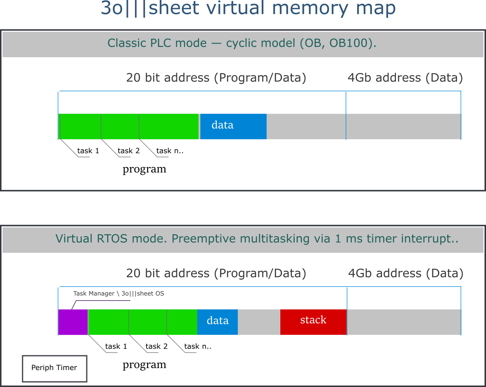

3o|||sheet Automation
is a universal software environment for developing applications for Programmable Logic Controllers (PLCs).
- Hardware Independence
- Integrated Development Environment (IDE).
3o|||sheet IDE
A lightweight, cross-platform IDE built on OpenJDK. Runs on single-board computers with minimal resources.
Supports LD, FBD, and ST languages plus a virtual machine instruction set for advanced logic design.
Offers extensive debugging capabilities: developers can modify code in real-time without physically restarting the PLC.
The development environment can create executable programs for the PLC in two modes:- Classic PLC mode — cyclic model (OB, OB100). An optimized, economical mode that contains a minimum of additional programs.
- RTOS PLC mode — preemptive multitasking via a 1 ms timer interrupt. In this case, the IDE will additionally install a virtual real-time 3o|||sheet OS to execute tasks in parallel.

3o|||sheet Compiler
Is a standalone application that compiles text programs written in LD, FBD, ST abd .3osheet into executable bytecode for a virtual machine.
The compiler can be integrated into third-party development tools (for example, >Visual Studio
It includes a complete set of tools for working with complex custom variables, virtual stack, and context management,
enabling the development of sophisticated recursive algorithms and multithreaded tasks (coroutines).

3o|||sheet Runtime
Register-based Virtual Machine running safely in a sandbox. Works on devices with only 8 KB RAM and full peripheral access.
Memory Map
Stack and heap dynamically share a contiguous memory area, allowing flexible memory allocation with minimal overhead.
LD Instruction Execution Times
Measured execution times for boolean and floating-point operations on different microcontrollers and PLCs.
| Device | Boolean Operation | Floating-Point Operation |
|---|---|---|
| CH32V307 144Mhz(3o|||sheet Runtime) | 1 μs | 2.5 μs |
| STM32F407 168Mhz(3o|||sheet Runtime) | 0.8 μs | 2 μs |
| STM32H743 480Mhz(3o|||sheet Runtime) | 0.2 μs | 0.5 μs |
| Rockwell Compact GuardLogix 5380 1Ghz | ~0.01–0.05 μs | ~~0.01–0.08 μs |
| Siemens S7-1200 | ~1–2 ms | ~3–5 ms |